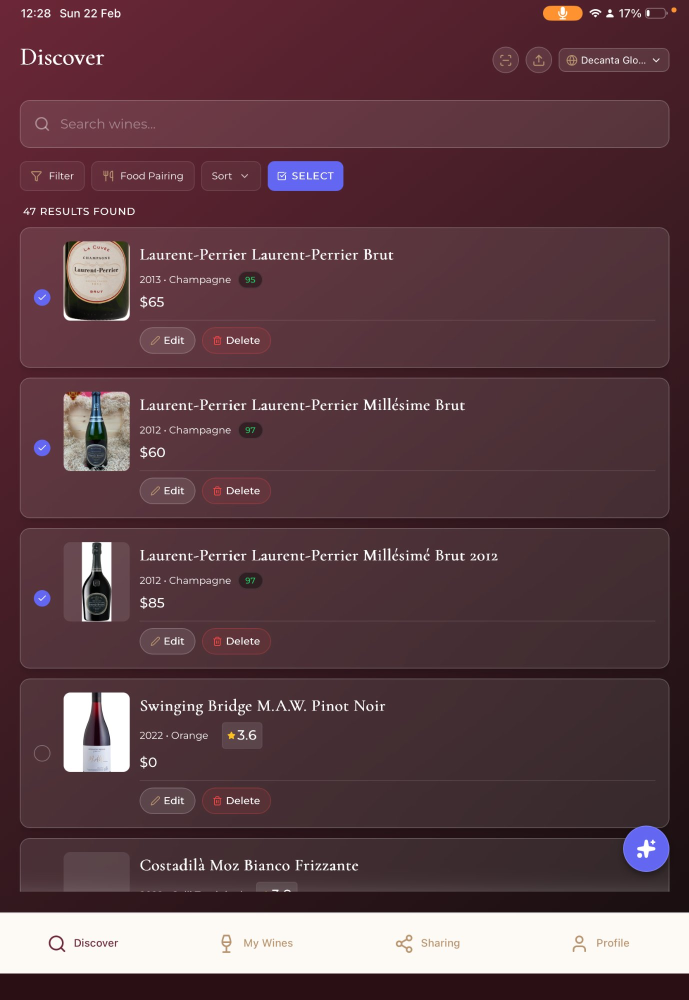
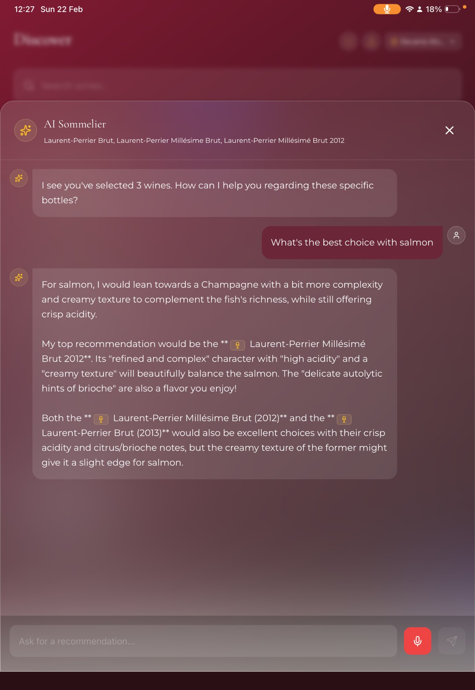
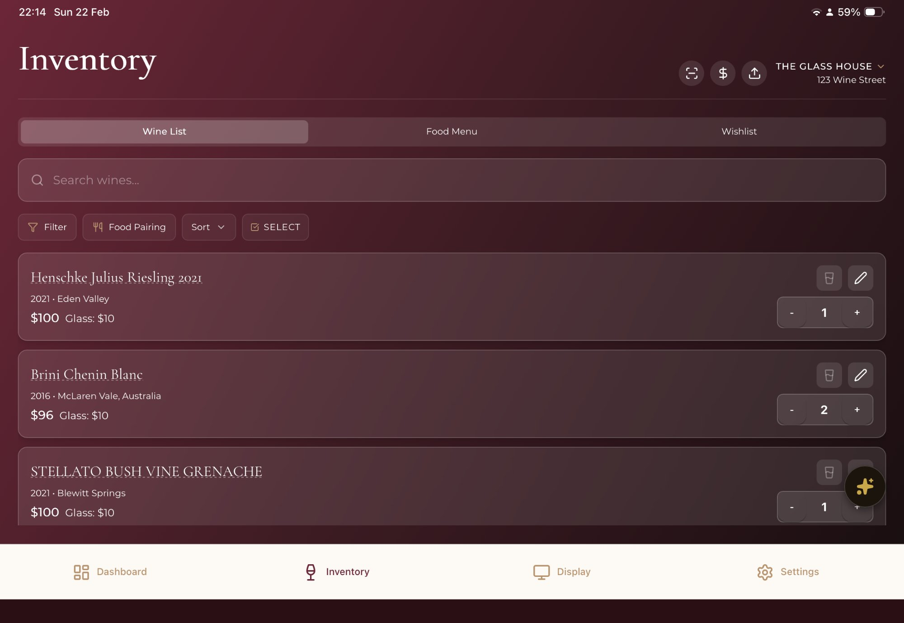
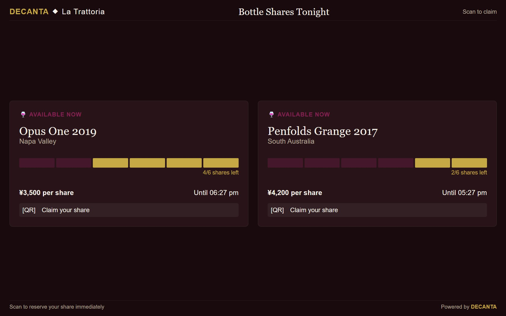
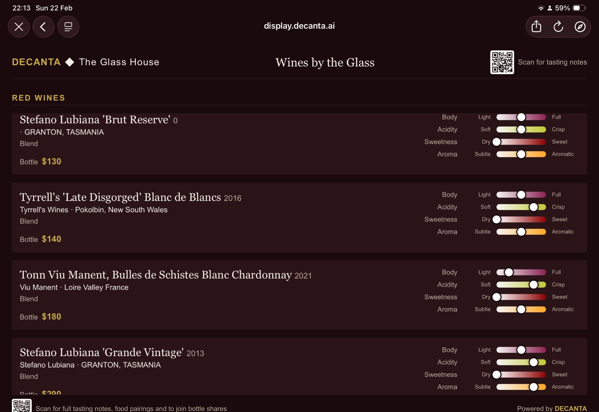

<!-- ============================================================
  DECANTA.AI — IMAGE ALT TEXT FIXES
  Find and replace each img tag in your index.html.
  Current images use generic alt text like "Wine Discovery" —
  replace with keyword-rich descriptive alternatives below.
  ============================================================ -->

<!-- BEFORE (current) -->


<!-- AFTER (replace with) -->


<!-- BEFORE -->


<!-- AFTER -->


<!-- BEFORE -->


<!-- AFTER -->


<!-- BEFORE -->


<!-- AFTER -->


<!-- BEFORE -->


<!-- AFTER -->


<!-- ── ALSO RENAME THESE FILES ON YOUR SERVER ───────────────
  Old filename        →  New SEO-friendly filename
  discovery.png       →  ai-wine-discovery-app.png
  ai_sommelier.png    →  ai-sommelier-wine-recommendations.png
  inventory.png       →  restaurant-wine-inventory-management.png
  bottle_shares.png   →  premium-wine-bottle-sharing.png
  digital_display.png →  restaurant-digital-wine-display.png

  Then update the src attributes to match and add 301 redirects
  from the old filenames to the new ones if they're linked externally.
  ============================================================ -->
